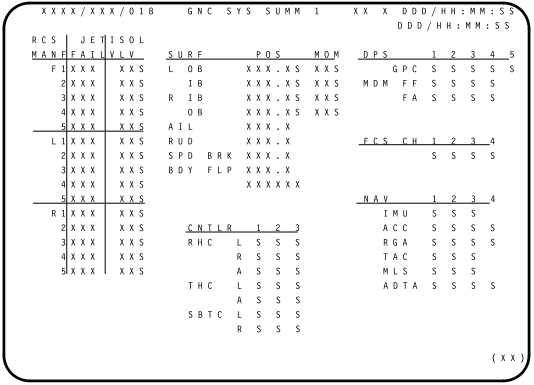

(This page is preliminary and almost-entirely
speculative at this point, since we don't yet have the unique
materials which it hopes to provide.)
Table of Contents
Introduction
Insofar as the Space Shuttle is concerned, the Virtual AGC
Project's present goals — or if you'd prefer, my goals — at
present are the following:
- To provide the complete source code for the software for the
most-significant of its onboard computer systems.
- To provide all of the official documentation needed to
understand that software and to work with it. See the References.
- To provide development tools suitable for working with the
source code, and in particular for compiling/assembling it into
executable form.
- To provide an emulator suitable for running that executable
code.
- For the emulator to be integrated into space-flight simulation
systems such as Orbiter+SSU or FlightGear.
In particular, we don't pretend to be putting together an
"everything about the Space Shuttle" site.
Now, there are various nuances to the statements above, such as
whether access to source code must be restricted in some ways,
rather than being freely available. And by "the" source
code, do I mean all revisions? Do I mean for all
components of the system? And by "the" development tools, do
I mean the original ones, or do I mean partial work-alikes?
And by emulation, do I mean emulation of the entire stack of code,
or just for some restricted portion of it? Answers to those
questions will become clear in the sections below ... or at least,
clearer than they are now. And I don't pretend to know all
of the answers yet. But there aren't necessarily unique,
permanently-correct answers. One thing I can say
unequivocally is that integration into space-flight simulation
systems is my hope rather than anything that I'll actively
pursue; integration is the prerogative of the developers of those
space-flight simulators, rather than mine, if they feel it's
worthwhile for them.
My explanation of the Shuttle's computer system here will by
necessity be rather limited. The system is simply too
complex, and there are too many resources already available on the
web for me to suppose that a presentation by a johnny-come-lately
like me would be worthwhile or even interesting about a topic this
big. Perhaps the best place to get an introduction would be
Chapter
4, "Computers in the Space Shuttle Avionics System", of James
Tomayko's Computers in Spaceflight: The NASA Experience.
With that said, here's a brief synopsis.
The portion of the Shuttle's full avionics system which concerns
us is the Data Process System (DPS), which includes the General
Purpose Computers (GPC), the crew interface
(cathode-ray-tube monitors and keyboards), the mass-memory units,
and the data-bus network interconnecting all of them. Here
is Figure 4-2, swiped from the afore-mentioned Computers in
Spaceflight, showing most of those components:

As you can see, there were five separate GPCs. Each of the
GPCs was an AP-101S computer, designed and manufactured by IBM's
Federal Services Division (as were the Apollo LVDC or Gemini
OBC, though the GPC was not similar to them).
Four of the GPCs nominally redundantly ran
identical
software, known as the
Primary Flight Software (PFS)
atop the
Flight Control Operating System (FCOS).
PFS and FCOS together are collectively referred to as the
Primary
Avionics Software Subsystem (PASS). The behaviors of
these four copies of FCOS were synchronized ... not on a
CPU-cycle by CPU-cycle basis, but to the extent that inputs to
the GPCs from the spacecraft, as well as commands output from
the GPCs to the spacecraft, occurred at the same time. In
particular, the fact that outputs from the GPCs were
synchronized allowed detection if one of the GPCs was behaving
abnormally. I say they did this "nominally", because this
extreme level of redundancy was warranted only during critical
flight phases ... in particular, during ascent and
reentry. During the more-leisurely phases of the mission,
if additional computing power was needded, the four principal
GPCs did not necessarily need to run identical, redundant
software.
The fifth GPC instead ran the
Backup Flight Software (BFS),
created entirely separately from PASS in a clean-room
fashion. This fifth GPC served roughly the same purpose in
the Shuttle as the Abort Guidance System (AGS) in the Apollo
LM. BFS was specialized for abort functionality, i.e.,
reentry in the absence of a reliable set of GPCs running
PASS. And as I said above, this capability was really
needed only during ascent or reentry.
Besides these, there was a
Run Time Library (RTL) that
provided various common functions needed by PASS/BFS, such as
square roots, trigonometric functions, and so forth.
The data buses interconnecting the GPCs and peripheral devices
were MIL-STD-1553 buses.
The crew-interface devices included:
- 26 line by 51 character displays, capable also of
displaying some graphics. Prior to about the year
2000, the pilots had 3 of these displays and the crew
specialist had 1; they were monochrome (green text on black
background) cathode-ray tubes (CRTs). After 2000, the
CRTs were replaced by multi-color liquid crystal displays
(LCDs), 9 for the pilots and 2 elsewhere.
Collectively, the CRTs and LCDs were referred to as
Multifunction Display Units (MDUs).
- Keyboards from Ebonex. The pilots had 2 of these,
and the mission specialist station had a 3rd.
In the diagrams below, the pre-2000 configuration is shown on
the left, while the post-2000 configuration is shown on the
right. Notice that the LCD-based displays (on the right)
have 6 buttons along the bottom edge that the CRTs (on the
left) lack, as well as being taller relative to their
width. The LCDs continued to display 51×26 textual
characters, just as the CRTs had, but the text was scrunched
into the upper part of the screen, while a strip along the
bottom of the LCD could display additional stuff that the CRTs
hadn't been able to, such as menu options selectable by the
edge buttons. These differences were transparent to the
PASS/BFS flight software, because the additional stuff
displayed along the bottom was not controlled by the PASS/BFS
software. In contrast, keyboards were the same
throughout the duration of the Shuttle program.
Here's a more-inclusive diagram (click to
enlarge) of the entire
older configuration of the
avionics system, if you feel the need for one. Personally,
I'm just including it because it's colorful, and you'll need to
dig into the actual documentation if you want real detail.
By the way, you can tell it's the older configuration rather
than the newer one, because if you look in the upper-left area,
you'll see "CRT 1", "CRT 2", "CRT 3", and (somewhat below the
others) "CRT 4", rather than the 11 MFDs you'd see in the newer
configuration:
Like the AGC, AGS, and LVDC, which are programmed essentially in
the assembly language native to their CPU types, the Flight
Control Operating System (FCOS) and the Run Time Library (RTL)
are written in the assembly language of the AP-101S CPU.
But once you get past those infrastructural items, you have the
Primary Flight Software (PFS), and the PFS is written in a
higher-level language called HAL/S.
The DPS
Overview Workbook explains the overall structure of the
software better than I can:
"PASS software consists of two types of software:
system software and application software. System software runs
the GPC. It is responsible for tasks such as GPC–to–GPC
communication, loading software from MMUs, and timekeeping
activities. Application software is software that runs the
orbiter. This includes software that calculates orbiter
trajectories and maneuvers, monitors various orbiter systems
(such as power, communications, and life support), and
supports mission–specific payload operations. The application
software is divided into broad functional areas called major
functions; in turn, each major function consists of
Operational Sequences (OPS), which are loaded into the GPCs
for each major phase of flight.
"Finally, each OPS has one or more Major Modes (MMs) that
address individual events or subphases of the flight."
References
All documents I can find that I feel are relevant to discussion
of the Space Shuttle's onboard computer systems and their software
have been collected on our Space Shuttle Library page.
However, here are some websites that have additional documents
that you may find interesting, and which may still contain
relevant materials that I've overlooked:
PASS and BFS Source Code
I have become aware that multiple collectors have copies of what
I think may be the complete final revision of PASS and possibly
BFS, as well as others who may possess incomplete non-final
revisions. This is remarkable in contrast to my frustrations
in acquiring AGC/AGS/LVDC/OBS software as described elsewhere on
this site, particularly since a former developer of Shuttle
software has told me that:
"When NASA shut down the Space Shuttle project, they erased all
of the backup storage media — since there WAS NO REQUIREMENT for
saving source code! Most of the HAL/S compiler and related
tools (like ... other support software were not saved), but all
of the HAL/S-based flight code was preserved."
I will keep the editorial comments I'm tempted to make to
myself. As an aside, I'll also comment that fortunately the
source code of the original HAL/S compiler was saved after all,
but by individuals rather than by any of the organizational actors
involve.
So ... the software still exists, which is good. But we
don't have any as of yet, and whether or not we can get any of it
remains to be seen.
But assuming that we can eventually get access to it, working
with the code requires knowledge of the HAL/S language.
Fortunately, we have a fair amount of documentation of that:
- The recommended starting point is "Programming
in HAL/S", which was intended as an introduction to
programming in HAL/S and is organized as a tutorial.
- The tutorial itself points out that it is not a definitive
exposition of the language, and recommends proceeding afterward
to the "HAL/S
Language Specification", which contains a much-more-formal
specification of the language syntax ... fortunately in the form
of easy-to-understand graphs of the syntax, rather than the (in
my humble opinion) a less-comprehensible Backus-Naur format
(BNF).
- Or to the "HAL/S
Programmer's Guide".
- And then there's the "HAL/S-FC
User's Guide" explains how to compile and execute a HAL/S
program. That explanation is, of course, completely
irrelevant to our present situation, but you may find that the
document answers some questions left unanswered by the preceding
documents. (You many notice as well that our library
contains a "HAL/S-360 User's Guide"; that's simply a predecessor
of the "HAL/S-FC User's Guide". The former assumes that
the computer on which the compiler ran was an IBM-360, while the
latter assumed it was some arbitrary "mainframe" to which the
compiler had been ported.)
We actually have quite a few revisions of each of the middle two
documents in our library, spanning the mid-1970's to the
mid-2000's, though I've only chosen to link the latest versions of
those documents above. Here are a few takeaways about the
HAL/S language that I imagine would commonly be asked by newcomers
to it:
- HAL/S is concerned with insuring correctness by design, in the
service of which it employs concepts from structured
programming.
- HAL/S is a strongly-typed language, but those datatypes
include not just integers and floats (whose datatype is actually
"scalar"), but others such vectors, matrices, and arrays (which
is a distinct datatype from vectors and matrices).
- By default, the vector datatype consists of 3-vectors, while
the matrix datatype consists of 3×3 matrices. Indices
(subscripts) of vectors and matrices begin at 1 rather than 0.
- Arithmetical expressions such as A=B+C work not only with
float (scalar) and integer datatypes but with vectors and
matrices as well, wherever compatible.
- There is no dynamic allocation of memory. Intended
side-effects of that are that there is no stack and no
recursion. The total memory usage is known at build-time.
- All keywords are reserved.
- HAL/S has no means of directly accessing specific addresses in
memory.
- HAL/S statements:
- End with the semicolon (';') character.
- Several may appear on the same line of source.
- Statements may be broken across several lines of source.
- An end-of-line is equivalent to a space character.
- Identifiers such as variable names:
- Maximum length of 32 characters.
- Must begin with an alphabetic character.
- Can contain alphanumerics and underscore characters,
'_'. Note: Both upper and lower case are
allowed, though all code samples I've seen to date involve
only upper case.
- Cannot end with an underscore.
- Cannot be broken across lines.
- HAL/S keywords cannot be used as identifiers.
- Two identifiers (variables or constants) separated by spaces
are multiplied ... in fact, there is no explicit multiplication
operator symbol such as '*'. ('*' is actually the vector
cross-product operator.)
- Constant expressions such as "3 + 1/7" are evaluated at
compile-time rather than at runtime, to the extent possible.
TBD
Software Versioning
As I've described above, any given shuttle had a number of
computers, running a lot of different software components — more
than just the GPCs running PASS/BFS/FCOS/RTL we're discussing
here. Each of these software components had their own unique
versioning. I couldn't begin to tell you what those all are;
I don't even have a list of all the different computers or their
software components, let alone details about their versions.
However, in all but the very earliest missions, the collection
of all of the software components at their various revision levels
was itself identified by what's called the Operational
Increment (OI). You thus see various Shuttle documents
specifying "OI-24" or "OI-33", and what this means is that those
documents are specialized to those particular overall software
versions. The versioning of individual software components
of the overall software version was apparently by Version
Increments (VI), such as "VI 1.23".
At this point, I have no authoritative references which link
software versions to specific Shuttle missions. For what
information I do have, I'd refer you to the mission summaries, Volume 1
and Volume 2.
(Some data past the end of Volume 2 can be gotten from NASA Press
Kits for STS-132 through 135.) In the following tabulation,
sorted by software version, notice that a higher STS mission
number sometimes has a lower software version number, presumably
partially because the mission numbering doesn't perfectly agree
with the chronological order in which the missions were flown.
Mission
|
Software Version
|
STS-1
|
R16/T9
|
STS-2, 3, 4
|
R18/T11
|
STS-5, 6, 7, 8
|
R19/T12
|
STS-9 (41A), 11 (41B), 13
(41C)
|
OI-2
|
STS-14 (41DR), 17 (41G), 19
(51A), 20 (51C), 24 (51B)
|
OI-4
|
STS-22 (51E), 23 (51D)
|
OI-5
|
STS-26 (51F)
|
OI5-24
|
STS-25 (51G)
|
OI-6
|
STS-27 (51I)
|
OI6-27
|
STS-28 (51J)
|
OI6-28
|
STS-30 (61A)
|
OI6-29
|
STS-31 (61B)
|
OI6-30
|
STS-33 (51L)
|
OI17-26
|
STS-32 (61C)
|
OI17-32
|
STS-26 (26R), 27 (27R), 28
(28R), 29 (29R), 30 (30R), 33 (33R)
|
OI-8B
|
STS-31 (31R), 32 (32R), 34
(34R), 36 (36R)
|
OI-8C
|
STS-35 (61E), 38, 40, 41
|
OI-8D
|
STS-37, 39
|
OI-8F
|
STS-42, 43, 44, 45, 48
|
OI-20
|
STS-46, 47, 49, 50, 52, 53,
54, 55, 56
|
OI-21
|
STS-51, 57, 58, 59, 60, 61,
62, 68
|
OI-22
|
STS-63, 64, 65, 66, 67
|
OI-23
|
STS-69, 70, 71, 72, 73, 74,
75, 76, 77, 78
|
OI-24
|
STS-79, 80, 81, 82, 83, 84,
94
|
OI-25
|
STS-85, 86, 87, 89
|
OI-26A
|
STS-88, 90, 91, 93, 95, 103
|
OI-26B
|
STS-92, 96, 97, 99, 101,
106
|
OI-27
|
STS-98, 100, 102, 104, 105,
108, 109
|
OI-28
|
STS-107, 110, 111, 112, 113
|
OI-29
|
STS-114, 115, 116, 117,
118, 121
|
OI-30
|
STS-120, 122, 123, 124, 125
|
OI-32
|
STS-119, 126, 127
|
OI-33
|
STS-128, 129, 130, 131,
132, 133, 134, 135
|
OI-34
|
For example, the presentation for the STS-121
Flight Readiness Review (FRR) tells us that the software
version was OI-30, in agreement with the table above, while just
the Integrated Display Processor (IDP) software component was
version VI 4.01 and the Multifunction Display Unit Function (MDUF)
was version VI 5.00.
Multi-Function Display Formatting and
Versioning
As was mentioned earlier in the Introduction, the principal method by
which the General Purpose Computers (GPC) running the primary
flight software (PFS/PASS) and backup flight software (BFS)
interact with the crew includes keyboards and display
screens. What's unusual about these display screens is that
what appears on them is only partially controlled by the
PASS/BFS software. Instead, there was another processor
sitting between each of the displays and the GPCs, and it was this
extra processor that directly controlled what was displayed and
how the display was formatted. (For that matter, the
keyboards also were attached to one of these extra processors
rather than to the GPCs, so whatever keystrokes were seen by the
PASS/BFS software had already been pre-digested.)
 In the case of the older, pre-2000
cockpit configuration (MCDS, 4 CRTs), this extra processor was
known as the Display Electronics Unit (DEU), and it
consisted of an IBM SP-0 CPU with 8K×16 bits of RAM. In the
case of the newer, post-2000 cockpit configuration (MEDS, 11
LCDs), the extra processor was known as the Integrated Display
Processor (IDP), a 368DX microprocessor. The basic schema is
seen in the diagram to the right. While the diagram is
specific to the older (MCDS) configuration, the newer (MEDS)
configuration is conceptually quite similar.
In the case of the older, pre-2000
cockpit configuration (MCDS, 4 CRTs), this extra processor was
known as the Display Electronics Unit (DEU), and it
consisted of an IBM SP-0 CPU with 8K×16 bits of RAM. In the
case of the newer, post-2000 cockpit configuration (MEDS, 11
LCDs), the extra processor was known as the Integrated Display
Processor (IDP), a 368DX microprocessor. The basic schema is
seen in the diagram to the right. While the diagram is
specific to the older (MCDS) configuration, the newer (MEDS)
configuration is conceptually quite similar.
In the case of the MEDS configuration, the software that was
specifically tasked with formatting the display was called the Display
Application Software (DAS). But these details are of
little interest to us in the absence of the DAS or other software
that ran on the DEU/IDPs. So the only use of these factoids
I'll use in the context of the present discussion is to refer to
what I've been calling the "extra processor" so far instead as the
"DEU/IDP".
What is of importance to us, however, is that in addition
to inputs from the GPCs via the MIL-STD-1553 databuses, the
DEU/IDP's RAM was used to store a set of templates that controlled
the formatting of the display screen. These templates were
loaded from mass memory into RAM at power-up. In other
words, the screen templates are independent of the PASS/BFS source
code.
For illustrative purposes, here's an example of the screen template
for "GNC SYS SUMM 1":

The screen templates don't quite fall under the Operational
Increment (OI) top-level software-versioning scheme we've already
discussed. They do, but they are also controlled by Program
Change Notices (PCN). In a practical sense, what this
means is that to know the screen templates and consequent
display-screen formats for any given Shuttle mission, we must have
not merely the screen templates for that generic OI, but also the
differences to those templates that were made due to specific
PCNs.
The controlling document for the screen templates is
unclear. The most-accessible seems to be JSC-48017,
the "Data Processing System Dictionary". We have
several revisions of JSC-48017 in our Shuttle Library, and
in principle, if we could collect all of the different
revisions, then we'd have all of the screen templates. On
the other hand, the Functional Subsystem Software
Requirements (FSSR) also contain these templates, and
seem a lot more authoritative, as well as providing a lot more
information. As a practical matter, they're also a lot harder to
find than DPS Dictionaries are. There are also
reference-card-like summaries that are very helpful, such as this
one for OI-34.
https://www.ibiblio.org/apollo/Shuttle/sts83-0020v1-34%20-%20Displays%20and%20Controls%20-%20GNC.pdf
That turns out to be even more problematic than it sounds.
Take the sample template for GNC SYS SUMM 1 seen above. I
got this from the
DPS Dictionary for OI-26 and subsequent as modified by PCN-4.
The document itself notes that with PCN-4 it's applicable to
STS-96 and subsequent ... which actually flew OI-27. So to
find the templates for OI-26, we'd actually need the DPS
Dictionary without PCN-4, and that's something that as of
this writing we don't actually have.
GPC - DEU/IDP Messaging
Keyboard data was supplied to the General Purpose Computers
(GPC), and hence to the PASS/BFS software, by means of messages on
the MIL-STD-1553 databuses interconnecting the GPCs and
DEU/IDPs. Similarly, data was output by the GPCs for display
by passing messages on the databuses as well. Technical
details about this messaging can be found in the Data
Processing System Brief. I won't bother to summarize
that information here, since the document's presentation is at
least as readable as anything I might write up to supplement
it. While our only available revision of this document so
far is for the MCDS, recall that the change from the MCDS to MEDS
cockpit configurations was done in a way that was transparent to
the existing software. That implies, I hope, that the
messaging format would have been the same in either configuration.
Compilation and Emulation
When a "modern" HAL/S compiler and a means of emulating the compiled
PASS/BFS executable code exists, I'll report on it in this section.
Until then, I'll merely point out that the
development roadmap and reports on progress along that roadmap
appear in the associated README file in our software
repository.
This page is available under the
Creative Commons No Rights Reserved License
Last modified by Ronald Burkey on
2022-11-26